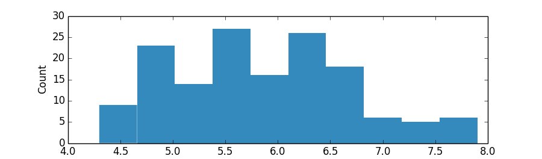
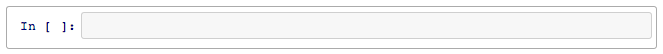
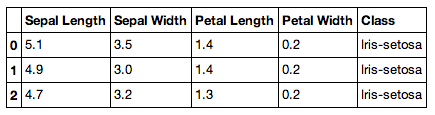
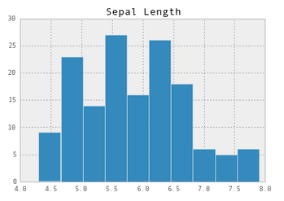

In my first five months of using Python, I would create .py files and
then execute them in the terminal, like the loyal follower of LPTHW
that I am. While it's certainly necessary to be able to write Python
scripts and execute them from the terminal, I've learned that this
workflow isn't the best way to explore data in Python.
I initially converted to Python from R, and since have missed the
interactiveness of working within RStudio (you don't have to re-run your
entire code every time you make a change and want to view the results)
and how R allows you to so quickly get to your data with data frames
built straight from text files. Enter: ipython and pandas. (Go
to their respective sites for installation instructions.)
Julia Evans has a fantastic tutorial on how to use pandas in an
ipython notebook. Here, I'd like to explore the differences between
doing data analysis using ipython notebook and pandas versus writing .py
scripts using mainly standard Python packages and executing via the
terminal.
Let's use the classic iris dataset for some simple analysis. First we
need to do some setup. Create a directory for our project (mine is
stored within my Projects directory that I keep in my Home directory.)
In the terminal:
$ mkdir ~/Projects/ipython-pandas-whoa
$ cd ~/Projects
Then create a Python script and open it with a text editor (I use
Sublime Text 2, which I've configured to open files with the command
subl.
$ touch barbaric-script.py
$ subl barbaric-script.py
This should open up a blank .py file in Sublime. If you don't have
subl set up, you can simply open up the blank barbaric-script.py file
we created with the touch command in your text editor of choice.
In the barbaric-script.py file, let's import the necessary packages.
We'll be using a couple standard python packages plus matplotlib.pyplot.
If you don't have matplotlib installed, you can find installation
instructions here.
import csv
import pprint
import urllib2
import matplotlib.pyplot as plt
To get the iris data, we'll use Python's built-in urllib2 and csv
packages and then do some basic formatting. Let's process the dataset as
a list of dictionaries.
url = "http://mlr.cs.umass.edu/ml/machine-learning-databases/iris/iris.data"
# Open data from URL as a file-like object
f = urllib2.urlopen(url)
# Create an empty list to store our data
parsed_data = []
# Read file
raw_data = csv.reader(f)
# Define our headers since the file doesn't contain explicit headers
# I found these headers from looking at the documentation at
# http://mlr.cs.umass.edu/ml/machine-learning-databases/iris/iris.names
headers = ['Sepal Length', 'Sepal Width', 'Petal Length', 'Petal Width', 'Class'
]
# Iterate through the rows in the file, and create a dictionary for each row
for row in raw_data:
# Dictionaries should have headers -> row
parsed_data.append(dict(zip(headers, row)))
# Delete the last row of parsed_data because it's blank
parsed_data = parsed_data[:-1]
# Let's see what parsed_data looks like
pprint.pprint(parsed_data[:3])
What you should see when you execute barbaric-script.py:
$ python barbaric-script.py
[{'Class': 'Iris-setosa',
'Petal Length': '1.4',
'Petal Width': '0.2',
'Sepal Length': '5.1',
'Sepal Width': '3.5'},
{'Class': 'Iris-setosa',
'Petal Length': '1.4',
'Petal Width': '0.2',
'Sepal Length': '4.9',
'Sepal Width': '3.0'},
{'Class': 'Iris-setosa',
'Petal Length': '1.3',
'Petal Width': '0.2',
'Sepal Length': '4.7',
'Sepal Width': '3.2'}]
Great! So we have our data formatted nicely. We have a list with
elements corresponding to each row in the file, and the elements in the
list are dictionaries. The keys in the dictionaries are the column
headers, and the values are the values associated with the respective
column header for that particular row. For example, the first
row/observation (printed as the first dictionary out of the three listed
above) is in the class Iris-setosa, has a Petal Length of 1.4, a Petal
Width of 0.2, a Sepal Length of 5.1, and a Sepal Width of 3.5. Let's do
some plotting to explore our data. We can make a histogram! Add the
following lines to your barbaric-script.py file:
# Let's create a list of the Sepal Lengths
# I'm calling float on the entries because otherwise they're stored as strings
sepal_lengths = [float(parsed_data[i]['Sepal Length'])
for i in range(len(parsed_data))]
plt.hist(sepal_lengths, color='#348ABD', edgecolor='none')
plt.xlabel('Sepal Length')
plt.ylabel('Count')
plt.show()
Let's try executing our script again.
$ python barbaric-script.py
A histogram should pop up in a separate window:

That's a lot of code (18 lines)! And we didn't even do anything
complicated - just parsed our data and plotted a histogram. Also, notice
that each time you tried to fix a bug or add a feature (like plotting
the histogram), you had to execute the entire script again, rather than
just the piece where you fixed the bug. That doesn't matter too much
since our data is fairly small and the script doesn't require much time
to execute, but it would be pretty annoying if our script took longer to
run.
Now let's try doing the same thing, but using pandas in an ipython
notebook. Use the terminal to run ipython notebook:
$ cd ~/Projects/ipython-pandas-whoa
$ ipython notebook
This will set up a local server on your computer, which will serve the
ipython notebooks that are in your working directory (right now you
don't have any) to http://127.0.0.1:8888. This should automatically open
up in your browser.
In the tab that opens in your browser, click "New Notebook". A new
ipython notebook will open up in another tab. A new cell will also open
up. Cells are places where you can write and execute code. This is what
a cell looks like:

To allow matplotlib to post plots within your notebook, rather than
opening up a separate window (like when we executed our .py script),
type the following into the cell:
Then to execute the cell, press shift+enter (which will execute the cell
your cursor is currently in and then automatically either move to the
next cell, if one exists, or open up a new cell). Once you press
shift+enter, your notebook should look like:
In the next cell, import the packages we'll be using, namely
matplotlib.pyplot and pandas:
import matplotlib.pyplot as plt
import pandas as pd
Press shift+enter again to execute the code (I'm going to stop telling
you to do this, but just assume that after each block of code you should
press shift+enter. If you get confused about what your notebook should
look like, look at my example notebook.)
To process the iris data, we can use the built-in panda read_csv
parser. We can get to a easy-to-use data frame within three lines of
code!
url = "http://mlr.cs.umass.edu/ml/machine-learning-databases/iris/iris.data"
# Define our headers since the url doesn't contain explicit headers
# I found these headers from looking at the documentation at
# http://mlr.cs.umass.edu/ml/machine-learning-databases/iris/iris.names
headers = ['Sepal Length', 'Sepal Width', 'Petal Length', 'Petal Width', 'Class']
iris = pd.read_csv(url, header=None, names=headers)
Let's see what the data looks like.
You should see a beautifully formatted table! This is a pandas data
frame, which is similar to a data frame in R.

Now let's plot a histogram for the Sepal Length column.
# I use two brackets around 'Sepal Length' to force pandas to make this
# a data frame rather than just a series, which is like a numpy array.
# The brackets here aren't necessary, but makes printing sepal_lengths
# prettier and makes it easier for us to combine sepal_lengths with other
# data.
sepal_lengths = iris[['Sepal Length']]
# Make the plot pretty!
pd.set_option('display.mpl_style', 'default')
sepal_lengths.hist()

By this point it should be fairly obvious that ipython and pandas are
both awesome for data analysis! They make Python a much more serious
contender as a tool for data analysis by giving you quick and easy
access to your data. In this simple example, the barbaric-script.py was
18 lines of code (disregarding comments, etc) and comparatively the
ipython notebook with pandas was only 10!
For further reading, I definitely encourage you to check out Julia's
pandas cookbook (presented via ipython notebooks), on which
incidentally I'll be collaborating with her next week (eeeep)!
My code for this post can be found on my GitHub, and the ipython
notebook can be easily viewed on NBViewer.
tags:
data analysis
hacker school
ipython
matplotlib
pandas
python
There are probably no comments.